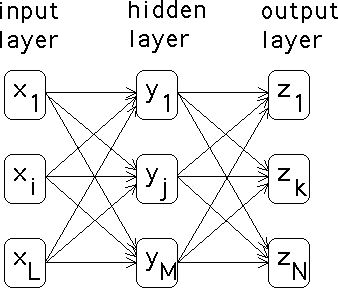
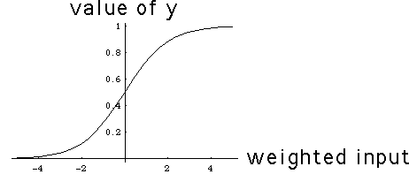
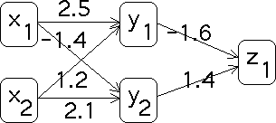
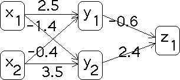
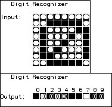
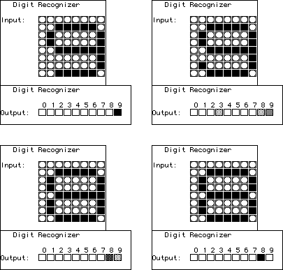
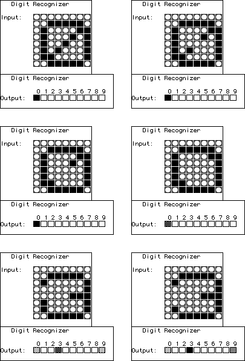

| Artificial Intelligence (AI) has a long history of big breakthroughs
being just over the 10 year horizon. Enthusiastic reports in the early 1960s predicted
machine awareness by the early 1970s. So far as we know, this has not happened yet.
Deep Blue notwithstanding, to date the most successful part of AI is neural nets, the
part most directly inspired by biology. |
| A neural net is a computational
architecture based on the design of the interconnections of neurons in our brains. There
are many variations, but one of the simplest is a feed-forward net. |
|  |
| The input layer receives values, xi that it feeds
forward to the hidden layer through the links indicated in the diagram. Associated
with each link is a weight, say wi,j
is the weight of the link between the ith input neuron and the
jth hidden neuron. The input of the jth hidden neuron is
the sum |
| w1,j*x1 + ... + wL,j*xL |
| There are several schemes for how this input is handled by the
hidden neuron. The simplest is called a threshold function. If
the weighted sum of the inputs exceeds a value, called the threshold, then the value
of yj is set to 1; otherwise, it is set to 0. The other common approach
is called a sigmoid function, pictured below. Note as the
weighted sum of the input values increases, the value of yj increases gradually,
instead of abruptly with the threshold function. (The threshold function more closely
follows the behavior of biological neurons.) |
|  |
| Another set of weights, vi,j,
connects the hidden neurons to the output neurons, and
the same process feeds forward the values of the hidden neurons to the output neurons. For
example, given the network and weights pictured below, suppose the inputs are
x1 = 0 and x2 = 1. What will the feedforward
process give for the output neuron? |
|  |
| First, compute the weighted inputs for the hidden neurons. |
| For y1 the input is 2.5*0 + 1.2*1 = 1.2 |
| For y2 the input is -1.4*0 + 2.1*1 = 2.1 |
|
| Using a threshold function with a threshold value of 0, we see
y1 = 1 and y2 = 1. Now the
weighted input for the output neuron is |
| -1.6*1 + 1.4*1 = -0.2 |
| Consequently, the output value is z1 = 0. |
| So what? The strength of neural nets lies not in their ability to
compute in this fashion, but in their ability to learn, to generalize.
Neural nets can be trained. Think of the training as learning to answer sample
questions. We want the net to produce specific outputs for certain inputs. Training
consists of adjusting the weights to match outputs and inputs. Typically, there is a
training set, a collection of outputs paired to inputs.
The weights are adjusted so the first input produces the first output. Next the
weights are adjusted so the second input produces the second output. This
continues until the last input gives the last output. By now, the weights have
changed so much that the first input no longer produces the first output. The training
process is repeated through all the input-output pairs. This is done again and again until
the net gets them all right. |
| The remarkable thing about this process is that we have no idea of
what the final weights mean. But often the net generalizes its training set: it can
correctly answer questions not in the training set. We shall mention examples in a
moment. |
| How are the weights adjusted to match the input-ouptut pairs? One
of the most common methods is back-propagation. The
difference between the feedforward value of zi and the training set
output value is the error, and the error is "propagated back" through the net, using the
weights to compute errors at the hidden neurons, and ultimately to adjust the
weights. |
| For example, suppose the training set for the net pictured above
contains the input-output pair |
| (x1 = 0, x2 = 1; z1 = 1) |
| The net picutured above is not trained for this input-output
pair. The output error is |
| ez1 = 1 - 0 = 1 |
| The weight between v1,1 gives the error at y1: |
| ey1 = ez1*v1,1 = 1*(-1.6) = -1.6 |
| Similarly |
| ey2 = ez1*v2,1 = 1*1.4 = 1.4 |
|
| With these error values, we compute the changes in the weights. |
| dv1,1 = ez1*y1 = 1*1 = 1 |
| dv2,1 = ez1*y2 = 1*1 = 1 |
| dw1,1 = ey1*x1 = -1.6*0 = 0 |
| dw2,1 = ey1*x2 = -1.6*1 = -1.6 |
| dw1,2 = ey2*x1 = 1.4*0 = 0 |
| dw2,2 = ey2*x1 = 1.4*1 = 1.4 |
|
| Now new weights are computed. |
| v1,1 -> v1,1 + dv1,1 = -1.6 + 1 = -0.6 |
| v2,1 -> v2,1 + dv2,1 = 1.4 + 1 = 2.4 |
| w1,1 -> w1,1 + dw1,1 = 2.5 + 0 = 2.5 |
| w2,1 -> w2,1 + dw2,1 = 1.2 + (-1.6) = -0.4 |
| w1,2 -> w1,2 + dw1,2 = -1.4 + 0 = -1.4 |
| w2,2 -> w2,2 + dw2,2 = 2.1 + 1.4 = 3.5 |
|
| Here is the new net. It is easy to verify this net is trained
for the input-output pair (x1 = 0, x2 = 1; z1 = 1). |
|  |
| Here is a more interesting example, generated using BrainMaker,
a commercial neural net package. The goal is to teach the net to recognize digits presented
as an 8 by 8 pixel array. This net has 64 input neurons, 10 output neurons (one for each
digit), and 25 hidden neurons. The weights are randomized initially. For example, the
input 0 produces the output shown here. The darkness of the box indicates the "certainty"
the net has of the value of the digit. This net is reasonably confused: it is quite sure 0
is 0, 5, and 6. Click on the picture to see the initial outputs for a this randomized net. |
|  |
| After training, the net will recognize the test digits, but what happens
if we present it with slightly modified test digits? Top left is the trianed response for the
digit 9. Note how the net's interpretations of the pixel pattern changes as we go step by step
from 8 to 9. The patterns for 8 and 9 are quite similar, so it is little surprise that small
changes destroy the net's certainty. |
|  |
| On the other hand, here is the net's trained response to the pixel pattern
for 0, and several variants. No other pattern resembles 0 very much, so the net is able to
generalize. Small changes from the pattern of 0 it still recognizes as 0. With enough
changes, the net begins to recognize 3. |
|  |
| Although the training process is completely deterministic, the
initial weight space is so high-dimensional that predicting the outcome of training the
randomized initial net is hopeless. Adding to the complications is the observation
that usually there are many different combinations of weights that satisfy all the
training set. Do the basins of attraction have fractal boundaries? We do not know. |
| Neural nets have many practical applications. Perhaps one of the
most surprising is landing large jet airliners. Boeing and Airbus both have neural nets
trained to land their largest planes. The nets can assimilate much more information
more rapidly than a human pilot, and if it has been trained for hundreds of hours in
conditions like those used to train people, we would expect it to perform well. How
well is a matter of some disagreement, best summarized by this observation. In a difficult
landing, the Boeing pilot can override the neural net, whereas the Airbus net cannot be
overriden. Scary? Just wait. |
{kind=link}